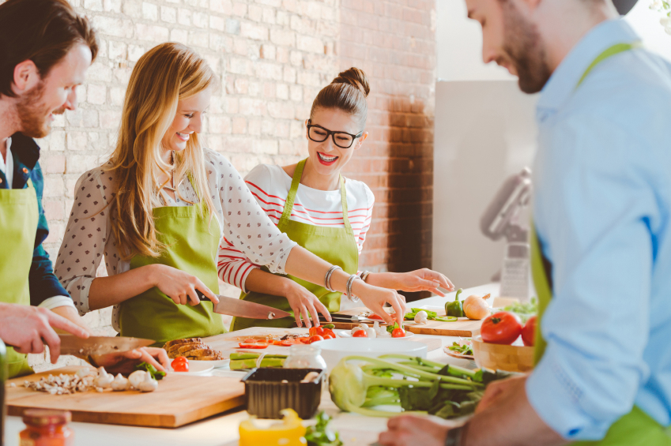

Let's Get Cooking
The Power of Food

Some people might say that good cooking is something that is not relevant in today's current climate.
That there are more important things to worry about than learning how to cook.
That cooking is only for some people.
I disagree.
Food is a powerful driver of community building. Many people appreciate a good homemade meal,
and good food can even repair relationships, spark conversation and provide a sense of family.
Therefore, there is no better time than in today's current climate to learn how to cook.
Our country, our states, our communities, often find themselves divided, when we most need to come together.
Food can bring people together, and I hope that this website can help with that.
Tips
Todos
1.
2.
3.
Not-todos
1.
2.
3.
Helpful Links
- Common Cooking Techniques that Everyone Should Know
- 12 Cooking Basics
- 101 Helpful Tips
Feedback